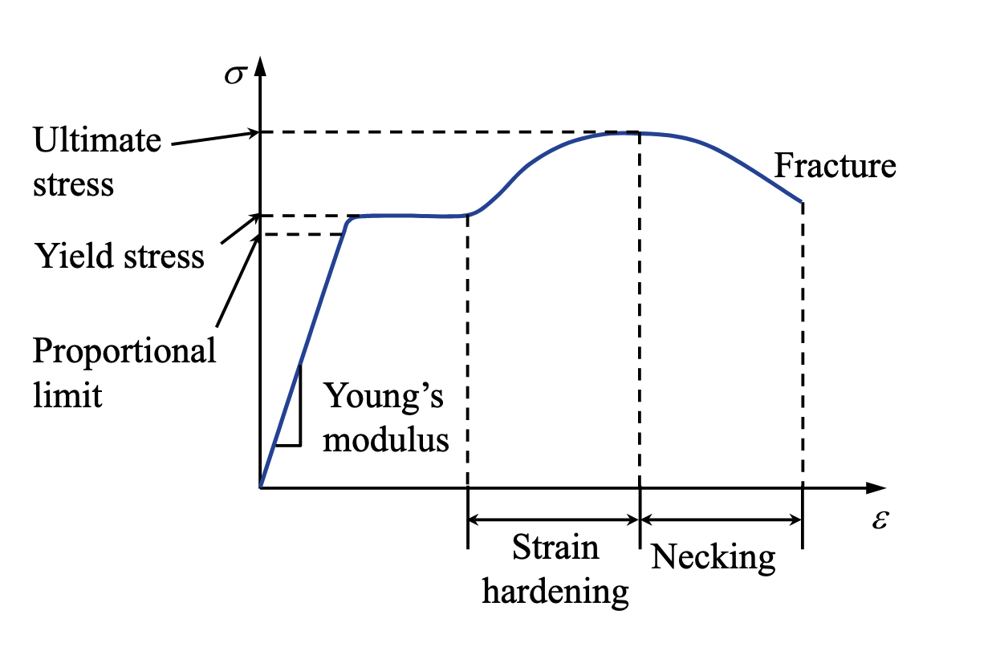

Chapter 1 Preliminary Concepts
Last updated: 26 Apr 2026
1.3 Stress and Strain
1.3.1 Stress
Surface traction is defined as the internal force per unit area or the force intensity acting on the cut plane with normal \(\boldsymbol{n}\) acting on a specific point \(P\):
Although \(\boldsymbol{t}^{(\boldsymbol{n})}\) at \(P\) depends on \(\boldsymbol{n}\), the state of stress at \(P\) can be represented by the stress tensor \(\boldsymbol{\sigma}\):
with the sign convention as
With the balance of angular momentum, the stress tensor is symmetric, i.e., \(\sigma_{i j}=\sigma_{j i}\).
We can also express the stress tensor using the Voigt notation as \(\boldsymbol{\sigma}=\left[\sigma_{11}, \sigma_{22}, \sigma_{33}, \sigma_{12}, \sigma_{23}, \sigma_{13}\right]^{\top}\). The Cauchy's Lemma states that the surface traction \(\boldsymbol{t}^{(\boldsymbol{n})}\) can be obatined with \(\boldsymbol{\sigma}\) as
which can be further decomposed into the normal and shear components as
where \(\sigma_{n}=\boldsymbol{t}^{(\boldsymbol{n})}\cdot\boldsymbol{n}=\boldsymbol{n} \cdot \boldsymbol{\sigma} \cdot \boldsymbol{n}\) is the normal stress and \(\boldsymbol{\tau}^{(\boldsymbol{n})}=\boldsymbol{t}^{(\boldsymbol{n})}-\sigma_{n} \boldsymbol{n}\) is the shear stress. The stress tensor can be decomposed into hydrostatic pressure/mean stress (volume change) and deviatoric stress (shape change) as:
with two interesting properties: 1. the frame invariant property of the hydrostatic pressure 2. the trace-free property of the deviatoric stress The deviatoric stress \(\boldsymbol{s}\) can also be obatined via:
where \(\mathbb{I}_{\text{dev}}\) is the unit deviatoric tensor of rank-4. \(\mathbb{I}\) is the unit sysmmetric fourth-order tensor with components \(I_{i j k l}=\frac{1}{2}\left(\delta_{i k} \delta_{j l}+\delta_{i l} \delta_{j k}\right)\). \(\mathbb{I}_{\text{dev}}\) has two important properties: 1. \(\mathbb{I}_{\text{dev}} : \boldsymbol{I} = \boldsymbol{0}\) 2. \(\mathbb{I}_{\text{dev}} : \boldsymbol{\sigma} = \boldsymbol{s}\) For each point, there are three mutually orthogonal planes with only normal stresses that attains an exremum, which are called principal planes. These stresses are called principal stresses, denoted as \(\sigma_1\), \(\sigma_2\), and \(\sigma_3\) with the convention \(\sigma_1 \geq \sigma_2 \geq \sigma_3\). The corresponding normal directions are called principal directions. The principal stresses can be obtained by solving the following eigenvalue problem:
By setting \(\operatorname{det}(\boldsymbol{\sigma} - \sigma_{n} \boldsymbol{I}) = 0\), we can obtain the three principal stresses \(\sigma_1\), \(\sigma_2\), and \(\sigma_3\) as the roots of the characteristic polynomial:
where \(I_1 = \operatorname{tr}(\boldsymbol{\sigma})\), \(I_2 = \begin{vmatrix} \sigma_{11} & \sigma_{12} \\ \sigma_{21} & \sigma_{22} \end{vmatrix} + \begin{vmatrix} \sigma_{22} & \sigma_{23} \\ \sigma_{32} & \sigma_{33} \end{vmatrix} + \begin{vmatrix} \sigma_{11} & \sigma_{13} \\ \sigma_{31} & \sigma_{33} \end{vmatrix}\), and \(I_3 = \operatorname{det}(\boldsymbol{\sigma})\) are the three invariants of the stress tensor. The principal directions can be obtained by substituting each principal stress back into the eigenvalue problem.
\(I_2\) can also be expressed as \(I_2 = \frac{1}{2} \left( \operatorname{tr}(\boldsymbol{\sigma})^2 - \operatorname{tr}(\boldsymbol{\sigma}^2) \right)\). The principal planes are mutually orthogonal.
1.3.2 Strain
Under the infinitesimal deformation assumption, the strain tensor \(\boldsymbol{\varepsilon}\) is defined as:
with the components as \(\varepsilon_{i j} = \frac{1}{2} (u_{i,j} + u_{j,i})\). The strain tensor is also symmetric, i.e., \(\varepsilon_{i j} = \varepsilon_{j i}\).
We can also express the strain tensor using the Voigt notation as \(\boldsymbol{\varepsilon}=\left[\varepsilon_{11}, \varepsilon_{22}, \varepsilon_{33}, \gamma_{12}, \gamma_{23}, \gamma_{13}\right]^{\top}\), where \(\gamma_{i j} = 2 \varepsilon_{i j}\) for \(i \neq j\) is the engineering shear strain. The Cauchy's Lemma, decomposition, and principal directions/strains for the strain tensor are similar to those for the stress tensor. For example, the volumetric strain is defined as \(\varepsilon_v = \varepsilon_{kk}\) and the deviatoric strain can be obtained via \(\boldsymbol{e} = \mathbb{I}_{\text{dev}} : \boldsymbol{\varepsilon}\).
1.3.3 Stress-Strain Relationship

The stress-strain relationship for a general linear elastic material can be expressed as:
where \(\mathbb{D}\) is the rank-4 elasticity tensor that must be symmetric. The total number of components of \(\mathbb{D}\) is 81 in 3D, but due to the symmetries of the stress and strain tensors, the number of independent components reduces to 21. Besides, for different material symmetries, we have:
| Material Symmetry | Number of Independent Components |
|---|---|
| anisotropic | 21 |
| orthotropic | 9 |
| transversely isotropic | 5 |
| isotropic | 2 |
| The elasticity tensor \(\mathbb{D}\) for isotropic materials can be expressed as: |
where \(\lambda\) and \(\mu\) are the Lamé parameters. \(\mu\) is also called the shear modulus. The Lamé parameters can be related to the nominal engineering constants (Young's modulus \(E\) and Poisson's ratio \(\nu\)) as:
More transformations can be found at Wikipedia. Besides, \(\mathbb{D}\) for isotropic materials can also be decomposed into the hydrostatic and deviatoric parts as:
which can be used to decompose the stress-strain relationship into the volumetric and deviatoric parts as:
where \(K = \lambda + \frac{2}{3} \mu\) is the bulk modulus. Then we can get \(\sigma_m = K \varepsilon_v\). For convenience, we can also express the stress-strain relationship in the Voigt notation as:
For plate-like structures, we can also use the plane stress or plane strain assumptions to further simplify the stress-strain relationship. For example, for plane stress, we have \(\sigma_{13} = \sigma_{23} = \sigma_{33} = 0\) through the thickness, and the stress-strain relationship can be simplified as:
The out-of-plane strain is usually not zero, and can be computed as \(\varepsilon_{33} = -\frac{\nu}{E} (\sigma_{11} + \sigma_{22})\). For plane strain, we have \(u_3 = 0\) for all points, thus \(\varepsilon_{13} = \varepsilon_{23} = \varepsilon_{33} = 0\). The stress-strain relationship can be simplified as:
The out-of-plane stress is usually not zero, and can be computed as \(\sigma_{33} = \frac{E\nu}{(1+\nu)(1-2 \nu)} (\varepsilon_{11} + \varepsilon_{22})\).